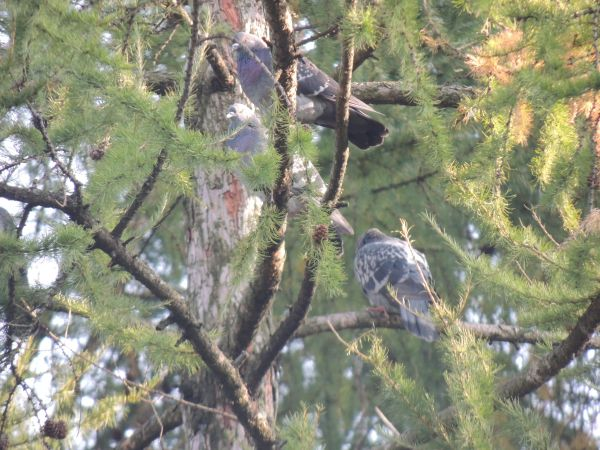

Навигация: Главная О нашем издательстве Главная О нашем издательстве
|
В городе Сясьстрое жители наблюдали необычную картину. Голуби занимались "сексом" вчетвером.
24 апреля 2021, г. Сясьстрой ленинградской области. Вечером 24 апреля в 19:00 жители города Сясьстроя, находившиеся в городском парке, наблюдали удивительную картину - 4 голубя спаривались одновременно, сидя друг на друге. Данная "картина" наблюдалась около часа, и привлекла внимание жителей всех окрестных домов, в т.ч. детей. Жители были очень шокированы таким поведением птиц - по словам очевидцев, "никогда такого не было целых 5 лет, и вот опять началось". Корреспонденты "16 троллейбуса" незамедлительно выехали на место происшествия, и зафиксировали пол птиц. В "оргии" учувствовала 1 самка, и 3 самца, при этом 3 самца спаривались друг с другом. Мы не стали сообщать об этом и без того шокированным жителям, а пошли с материалами к биологу Алуштаеву Виктору, который наблюдает за дикой природой в Ленинградской области, и попросили прокомментировать ситуацию. "Данное явление является абсолютно нормальным для голубей в Ленинградской области. Голуби здесь мигрируют между Петербургом и областью. А как известно, в отличие от ЛО в Петербурге культура немного другая - более свободная и раскрепощённая. Так как голуби живут рядом с человеком, они набираются привычек у человека, и копируют его поведение. Особенно хорошо заметно такое копирование поведения для голубей, обитающих в районе Думской улицы. Таким образом, жители Сясьстроя вероятно всего видели голубей, которые живут в районе указанной улицы". Как сообщают местные жители, голуби летали над городом ещё в течение вечера, а после улетели в неизвестном направлении. Пока обстановка тихая, однако местным жителям местные власти рекомендуют носить с собой воду в пульверизаторе для разгона голубей и недопущения пагубного влияния подобного спаривания на их психику. P.S. К сожалению, показать вам полученные фото не можем - нас читают дети. Но вот вам небольшое трио Думских голубей, снятых нами не так давно.  |